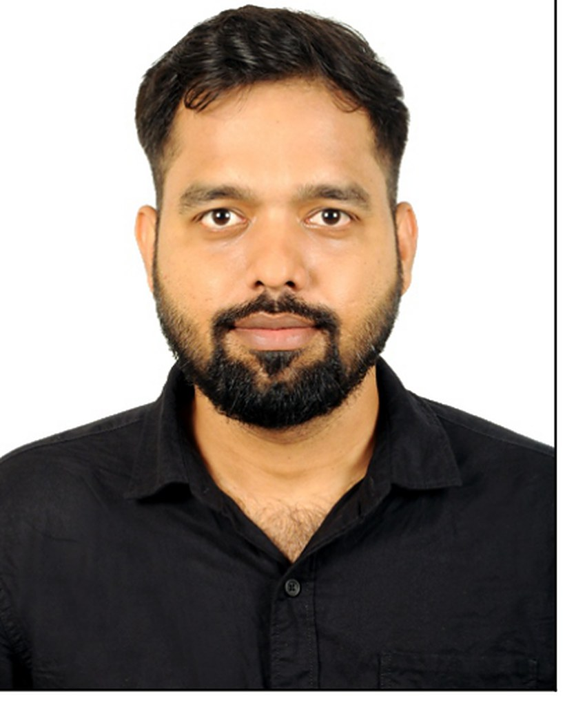

DoctorGopikrishnan
Palanivel
Specialist Anaesthesiologist & Intensivist, Chennai — trained at Seth GS Medical College & KEM Hospital, Mumbai.
I am a specialist anaesthesiologist and intensivist working in Chennai, with an M.D. in Anaesthesiology from Seth GS Medical College & KEM Hospital, Mumbai — entered on national NEET-PG rank — and a senior residency at Sion Hospital, home to one of the largest government trauma centres in Asia. Across training and independent practice my cumulative exposure runs to 4,500+ anaesthesia cases, spanning elective, emergency and trauma lists.
The work is deliberately dual: I anaesthetise across general, orthopaedic, neuro, cardiac, OBGY and interventional radiology lists, and I lead ICU rounds for mixed medical–surgical units — ventilated patients, haemodynamic instability, multiorgan support. Around that sits teaching (BLS, ACLS and POCUS workshops for over a hundred clinical staff), three research projects, and an MBA in Healthcare & Hospital Management completed in 2026 while in full-time practice.
Practice & postings
Every clinical post held since qualifying, newest first. Filter by the kind of work, or open an entry for detail.
Specialist Anaesthesiologist & Intensivist Jul 2025 — present St. Isabel’s Hospital, Mylapore Chennai
- Perioperative anaesthesia across general surgery, OBGY, orthopaedics, interventional radiology and cardiac interventions — general, regional and sedation techniques, including day-care lists.
- Advanced bedside procedures: video-laryngoscopy for the difficult airway, ultrasound-guided central venous and arterial line placement, intercostal drain insertion, haemodialysis catheter placement and lumbar puncture in the ICU.
- Lead comprehensive ICU rounds for a mixed medical–surgical unit — ventilated patients, titration of haemodynamic support, and multidisciplinary coordination for complex multiorgan dysfunction.
- Pre-anaesthetic assessment, intraoperative monitoring and post-operative care pathways.
- Conducted a POCUS workshop at the hospital’s Clinical Advances Meet.
Senior Registrar, Anaesthesiology & Critical Care Dec 2024 — Jun 2025 Sooriya Hospital, Kodambakkam Chennai
- Perioperative anaesthesia for high-complexity orthopaedic, neurosurgical, general and superspeciality cases, interventional radiology and cardiac interventions, plus high-risk bedside and day-care procedures.
- Independently delivered specialised technique — difficult intubation, central and arterial line placement, intercostal drain insertion, haemodialysis catheter placement and lumbar puncture in the ICU.
- Led multidisciplinary ICU rounds, coordinating care plans and mentoring resident physicians in critical care and anaesthesia protocols.
- Ultrasound-guided interventions; supervised ICU admissions including ventilator management, haemodynamic monitoring and multiorgan support.
- Ran a BLS workshop for the paramedic team.
Specialist Anaesthesiologist & Intensivist Sep 2023 — Dec 2024 Sasiram Medicare (Bharathiraja Hospital), T. Nagar Chennai
- Anaesthesia for orthopaedics, GI surgery, ENT, emergency and trauma procedures, interventional radiology and cardiac interventions — 400–500+ cases a year, from pre-anaesthetic assessment through intraoperative management to post-operative monitoring.
- Ultrasound-guided peripheral nerve blocks and central vascular access across elective and emergency lists.
- Managed ICU rounds for ventilated medical and surgical patients requiring advanced life support, haemodynamic monitoring and titrated vasopressor therapy.
- Designed and delivered BLS and ACLS training workshops for 100+ nursing and medical staff.
Senior Resident, Anaesthesiology Aug 2022 — Aug 2023 Lokmanya Tilak Municipal Medical College & Hospital, Sion Mumbai
- Perioperative anaesthesia for high-complexity cases — neurosurgery, orthopaedics, ENT, ophthalmology, polytrauma and emergency presentations.
- Worked in what is described as Asia’s largest government trauma centre, in the heart of Mumbai.
- Executed inter-city air ambulance transfers for critically ill patients, maintaining full monitoring and critical care throughout transport.
- Delivered academic instruction on inhalational anaesthesia and mechanical ventilation strategies for resident physicians.
- Certified present 365 of 365 days of the bonded tenure; the post is a designated teaching post at the hospital.
Specialist Anaesthesiologist — independent practice Aug 2022 — Sep 2023 Corporate hospitals & nursing homes Mumbai
- Consultant anaesthesia cover across private hospitals and nursing homes in Mumbai, alongside the Sion senior residency.
Medical Officer — Emergency & ICU Aug 2018 — May 2019 Saroja Hospital, Rangarajapuram & locum practice Chennai
- Emergency room and intensive care cover as duty medical officer.
- Independent locum practice as a medical officer across Chennai before commencing postgraduate training.
Duty Medical Officer — Medical ICU Feb 2018 — Aug 2018 Vijaya Hospital, Vadapalani Chennai
- Six months of continuous medical ICU duty — the posting that set the direction towards critical care.
Compulsory Rotatory Resident Internship (CRRI) Mar 2016 — Mar 2017 Government Thiruvarur Medical College & Hospital Thiruvarur
- General medicine — diagnosis and management of acute and chronic illness under supervision.
- General surgery — pre- and post-operative care and basic surgical procedures, including an anaesthesia attachment.
- Obstetrics & gynaecology — conducted deliveries, assisted at caesarean sections. Graded excellent.
- Ophthalmology and elective radiology — both graded excellent.
- Paediatrics, orthopaedics, ENT, casualty and community medicine — all graded above average.
- Rural health outreach and public-health assessment through the community medicine posting.
Clinical scope
Where the training sits, by domain.
Anaesthesia
- Pre-anaesthetic assessment and high-risk perioperative optimisation
- Advanced and difficult airway management, video-laryngoscopy
- Ultrasound-guided regional anaesthesia and peripheral nerve blocks
- General, regional and sedation technique across day-care and major lists
- General, neuro, cardiac, orthopaedic, ENT, ophthalmic, OBGY, GI and transplant surgery
- Interventional radiology and cardiac intervention suites
- Emergency, septic and polytrauma theatre
Critical care
- Mechanical ventilation, respiratory support and weaning
- Haemodynamic monitoring and titrated vasopressor therapy
- Multiorgan support and complex multiorgan dysfunction
- Acute respiratory failure, sepsis, post-operative complications
- Trauma and perioperative ICU
- Infection control protocols and sepsis bundles
- ICU round leadership for mixed medical–surgical units
Procedures & imaging
- Ultrasound-guided central venous and arterial line placement
- Intercostal drain insertion
- Haemodialysis catheter placement
- Lumbar puncture in the ICU setting
- Point-of-care ultrasound (POCUS) and echocardiography
- Low-dose spinal and combined spinal–epidural technique
- Lung isolation techniques
Teaching & transfer
- BLS and ACLS instruction — 100+ nursing and medical staff trained
- POCUS workshop delivery at hospital clinical meetings
- Resident tutorials: inhalational agents, mechanical ventilation
- Bedside and simulation-based teaching; clinical mentorship
- Inter-city air ambulance retrieval under full monitoring
- Multidisciplinary team coordination and leadership
Education & training
Healthcare management
M.B.A. in Healthcare & Hospital Management, SRM Institute of Science and Technology — completed June 2026 while in full-time consultant practice. Twenty-three papers and a capstone project across four semesters, the whole second half of the degree in healthcare and hospital management.
Leadership, councils & community
Elected office in resident doctors' associations and student councils, through both undergraduate and postgraduate training.
Vice President — Central MARD, Maharashtra State Chapter
Elected to the state leadership of the Maharashtra Association of Resident Doctors, the body representing resident doctors across Maharashtra. Met state-level officials on repeated occasions to negotiate solutions on resident welfare, stipends, working conditions and hostel and safety issues.
Maharashtra · statewide mandate
General Secretary — KEM MARD
Chief office-bearer of the resident doctors' association at Seth GS Medical College & KEM Hospital. Ran the association's day-to-day business, represented residents to the college and hospital administration, and organised academic and welfare programmes for the resident body.
Seth GS Medical College & KEM Hospital, Mumbai
General Secretary — Students' Council
Elected general secretary of the students' council at Government Thiruvarur Medical College & Hospital, leading student representation and the college's programme of events during undergraduate training.
Government Thiruvarur Medical College & Hospital, Thiruvarur
Event lead — college and association programmes
Organised and led high-level programmes and events through both undergraduate and postgraduate years — academic meetings, cultural and association programmes — coordinating teams across departments and year groups.
Thiruvarur & Mumbai
Community resuscitation training
Conducted BLS and ACLS workshops well beyond the hospital — for medical students, nursing and hospital staff, members of the general public, and public and corporate offices. Bringing competent bystander CPR to non-clinical audiences is the public-health work I keep returning to.
Chennai & Mumbai
Professional societies
Indian Society of Anaesthesiologists (ISA) · Research Society of Anaesthesiology and Clinical Pharmacology (RSACP).
Research & scholarship
Three lines of work: what clinicians actually know, what a unit actually does, and how patient data ought to be organised.
Prevalence and predictors of adequate knowledge regarding advanced cardiac and basic life support among healthcare professionals
A study of 400 healthcare professionals — doctors, nurses and allied health staff — assessing BLS and ACLS knowledge gaps, identifying the predictors of competency, and using the result to shape evidence-based training interventions. The finding that resuscitation knowledge decays without structured refresher training is what turned into the teaching programme that has run through the rest of my career.
Thromboprophylaxis in critically ill patients, benchmarked against CHEST 2021
Led an audit comparing institutional practice in pharmacological and mechanical thromboprophylaxis against the CHEST 2021 guideline standard for the ICU — the kind of quiet, unglamorous measurement that changes what a unit does on a Tuesday.
A three-pipeline patient data framework: healthcare data environments and speciality-specific processing
An expert survey across specialist consultants in India, validating a framework that organises clinical data into three pipelines — anatomical, physiological and biochemical — and examines how that classification affects pattern recognition and patient management systems in a very large and largely unstructured healthcare data environment.
Presentations & academic contributions
Low-dose spinal with epidural in hypertrophic obstructive cardiomyopathy
Ultrasound-guided low-dose spinal plus epidural anaesthesia in a patient with HOCM undergoing left tibia intramedullary nailing — a case where conventional neuraxial dosing carries real haemodynamic risk.
Spinal anaesthesia in ankylosing spondylitis with bamboo spine
Ultrasound-guided spinal anaesthesia for right total hip replacement in a patient whose fused spine makes landmark-guided neuraxial access impractical.
TIVA versus inhalational agents in neuroanaesthesia
Argued the case for total intravenous anaesthesia in the academy’s postgraduate assembly debate.
Teaching programme
- POCUS workshop — Hospital Clinical Advances Meet, St. Isabel’s
- BLS workshop — paramedic team, Sooriya Hospital
- BLS & ACLS workshops — 100+ nursing and medical staff
- Resident tutorials — inhalational anaesthesia, mechanical ventilation
- Public and corporate BLS/ACLS training
Certification & registration
Credentials
Registrations, degrees, mark sheets, life-support and trauma certification, and service records. Select any document to view it full size. Identifiers that function as verification secrets have been masked.
Beyond medicine
Languages
Reading & thinking
Non-fiction reading, philosophy and economics, physics and mathematics. The habit that keeps the clinical thinking honest — and the reason strategy games and problem solving are the way I rest.
Technology in practice
A forward-looking, technology-driven approach to medicine: actively integrating AI tools into continuous learning and clinical practice, which is also where the three-pipeline data research came from.
Finance & enterprise
Personal finance and wealth planning, business administration, and an ongoing interest in building something of my own in healthcare — the thread that led to the MBA.
Health & discipline
Diet, fitness and holistic health; meditation and yoga. Practising what intensive care teaches you about how much of outcome is decided long before the admission.
Play & travel
Carrom and cricket, bike riding, and travelling to new cities and cultures — Mumbai and Chennai have both left their mark on how I work.
Teaching, outside the hospital
BLS and ACLS workshops for medical students, the general public, and public and corporate offices. Getting competent bystander CPR to non-clinical audiences is the public-health work I keep returning to.
Contact
Open to specialist anaesthesia and intensivist posts, teaching engagements and healthcare management roles.
Tamil Nadu, India
Professor & Head, Department of Anaesthesiology,
Symbiosis Medical College for Women, Pune.
Professor, Department of Anaesthesiology,
Seth GS Medical College & KEM Hospital, Mumbai.
Referee contact details are available on request, and are deliberately not published here.